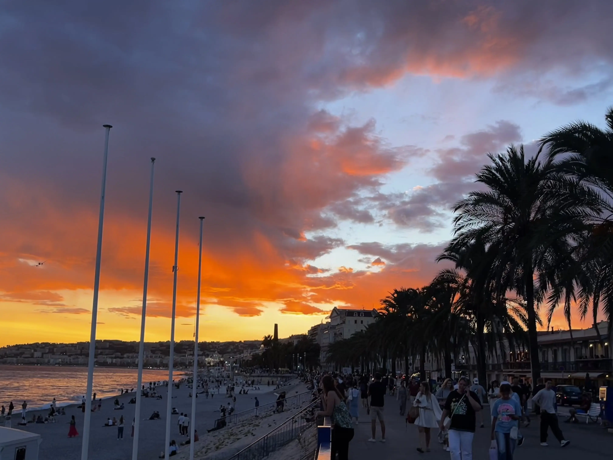
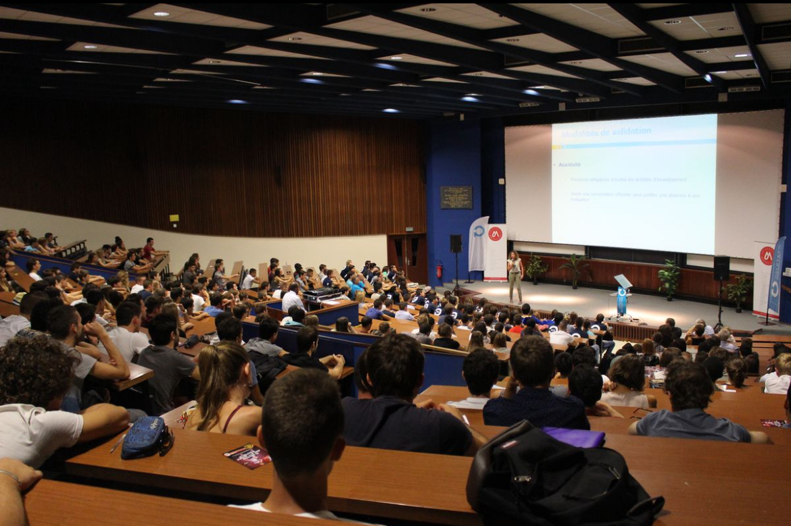
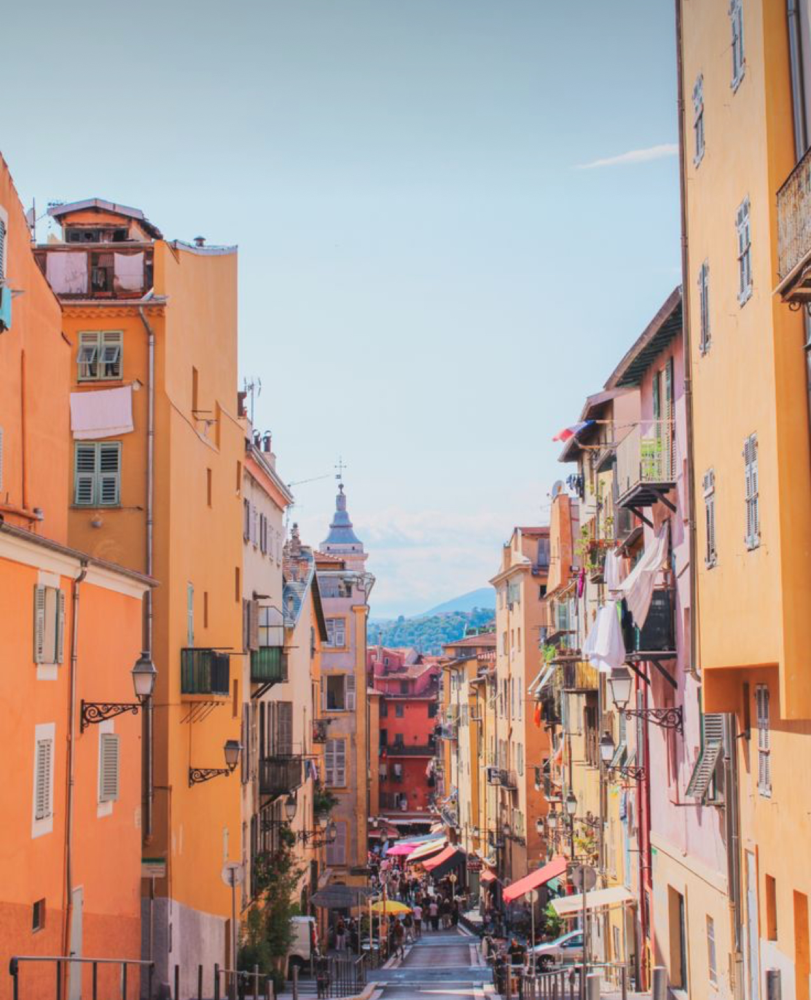

Nomine Boulo - étudiante

Enfance de Nomine Boulo
Nomine Boulo est née sur la côte d'azur plus précisement à Nice, en 2003.
Formations
Après l'obtention de son baccalauréat à Calmette, elle a rejoint la licence Information et communication, au sein du parcours Organisation et stratégie numérique.
Expériences Professionnelles
Elle travaille dans le vieux vieux-nice, sur le cour saleya en tant qu'hôtesse d'accueil dans une chaîne de restaurant en parallèle de ces études. De plus elle effectue un stage dans une agence de communication à Monaco jusqu'à la fin de Mai.
Projets Futurs

Elle aimerait rejoindre le Master ICONES à Carlone,un parcours de l'ingénierie de la communication organisationnelle, numérique et stratégique en alternance car c'est une excellente opportunité pour approfondir ses compétences professionnelles.